Design for Digital Fabrication (Laser Cutting)#
Authors: Your Name
Last Edited: 2023-07-15
Created: April 20, 2023 11:58 PM
Categories: Lesson
Review: Ready for Review
This tutorial will teach you the workflow on how to prepare your Rhino geometry for digital fabrication, specifically laser cutting. The workflow includes techniques such as creating contour slices of the geometry, creating intersecting joints between the slices, orienting the slices onto the cutting plane, optimizing the packing layout with OpenNest plugin, and exporting the curves for laser cutting.
First, we will start with the process of creating contours from a 3D geometry. This step will involve dissecting a 3D model into a series of 2D sections or ‘slices’ using intersecting planes in Grasshopper. Next, we’ll move to finding the intersections between slices and cut joints between the slices. This step is important to ensure the slices can be joined and assembled together. Once we have our finished slices, the third stage will involve orienting these slices flat onto the cutting plane.
In the fourth step, we will concentrate on how to efficiently pack these slices inside the cutting plate. We’ll use the OpenNest plugin, a powerful tool for layout optimization, to help you minimize waste and maximize the usage of your material sheet. Finally, we will wrap up by showing you how to export these curves for laser cutting. This will prepare you to take your designs from the virtual space of Grasshopper into the real-world process of laser cutting.
By the end of this tutorial, you will have a solid understanding of these essential laser cutting preparation techniques in Rhino Grasshopper.
Preparing the Geometry#
Welcome to the first section of our laser cutting preparation tutorial. Here, we will introduce the geometry we’ll be using for this lesson: a bench. This bench will serve as a practical example throughout our tutorial, allowing us to delve deep into the techniques required for preparing a 3D model for laser cutting.
To create our bench, we’ll be using the sweep function in Rhino Grasshopper. The sweep function allows us to create a surface by ‘sweeping’ a curve (or multiple curves) along a path, defined by another curve. In the case of our bench, we will be drawing our curves in Rhino and then importing them into Grasshopper. The curves will consist of the outline of the backrest and the top and bottom path to use for the sweep. These profiles should be drawn to scale, reflecting the actual dimensions you want for your bench.
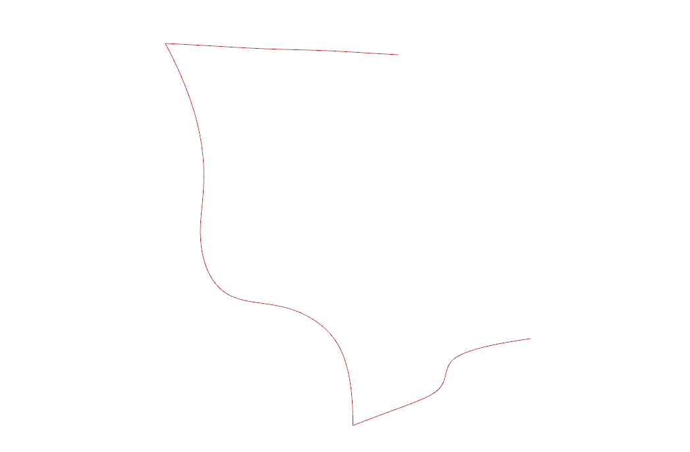
Once we’ve drawn these curves, we will import them into Grasshopper using the “Geometry” component to apply the sweep function. This function takes two main inputs: the curve(s) to be swept (sections) and the path along which they should be swept (rails). By using the sweep function, we’ll transform our two-dimensional curves into a three-dimensional bench model. This model will then serve as the starting point for our contour slicing and plate packing processes in the later sections of this tutorial.
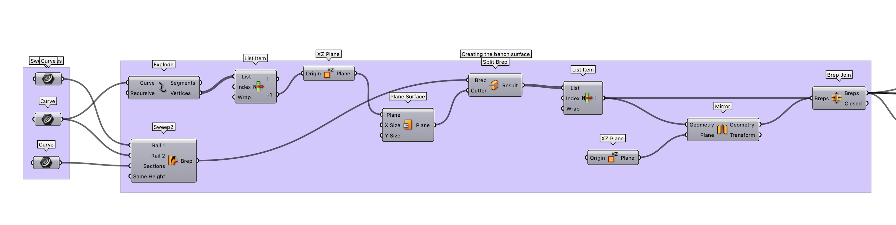
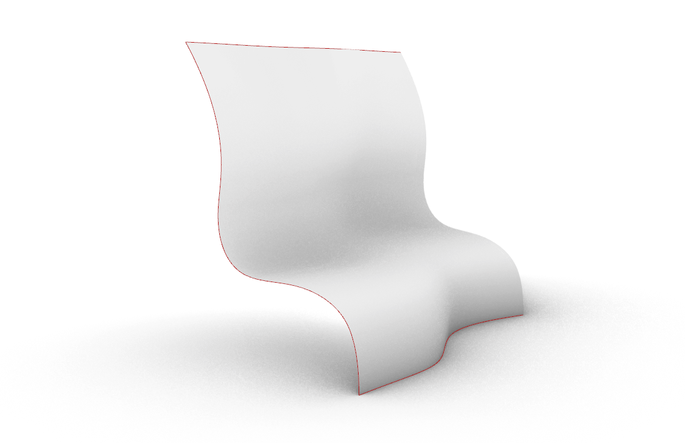
Finally we will mirror the surface to obtain a symmetric bench for use in the next section. For this exercise, we only need the main surface of the bench as the back and bottom will be generated in the next section when we find the contours of the surface. The image on the right shows how the bench looks with the inside volume filled.
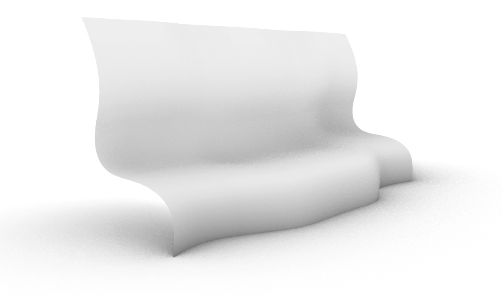
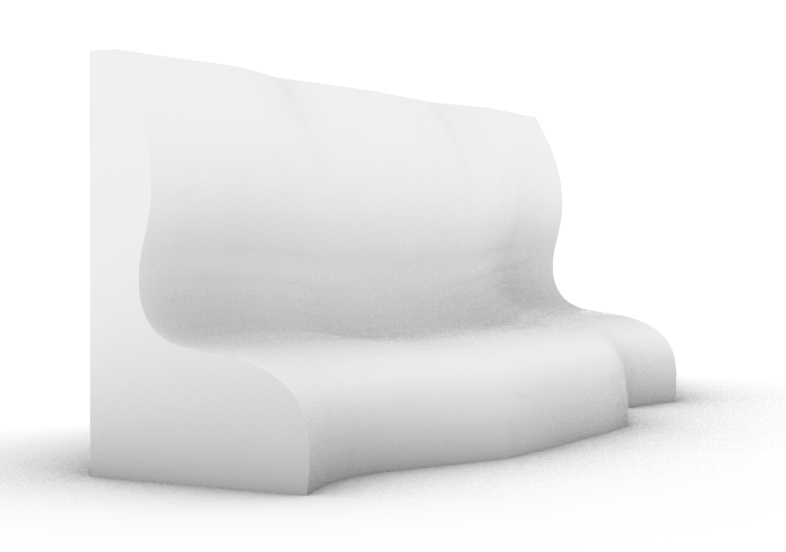
Finding Surface Contours#
Now that we’ve created our 3D bench model, it’s time to start preparing it for laser cutting. In this section, we’ll slice our surface into both vertical and horizontal sections using intersecting planes and generate the back and bottom of the bench by projecting to the respective planes. If your starting geometry is a closed Brep, you can generate the surface contours without finding the back and bottom projections.
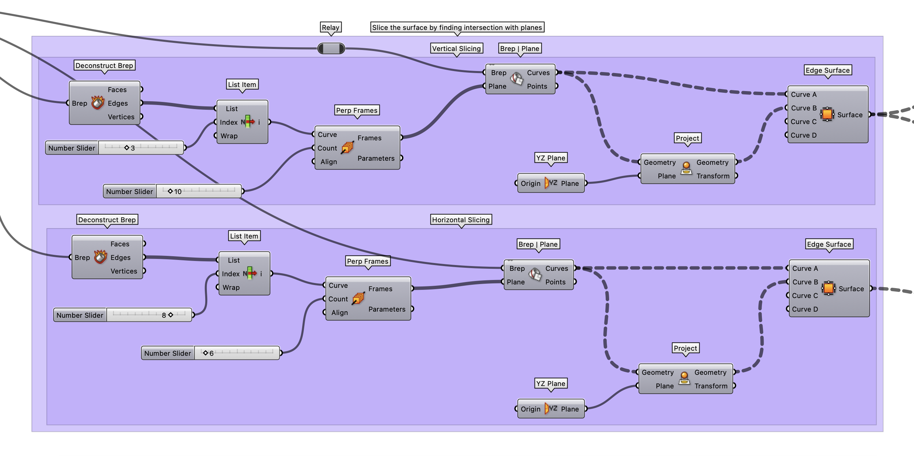
We will use the ‘Perp Frames’ component to define a series of 2D planes within the bounding box of the geometry. We’ll use these planes as ‘cutting boards’ to slice through our 3D bench model. We’ll create two sets of planes: one set that’s horizontal (parallel to the ground plane) and one set that’s vertical (perpendicular to the ground plane). We can define the count of the “Perp Frames” to define the number of slices in the horizontal and vertical direction.
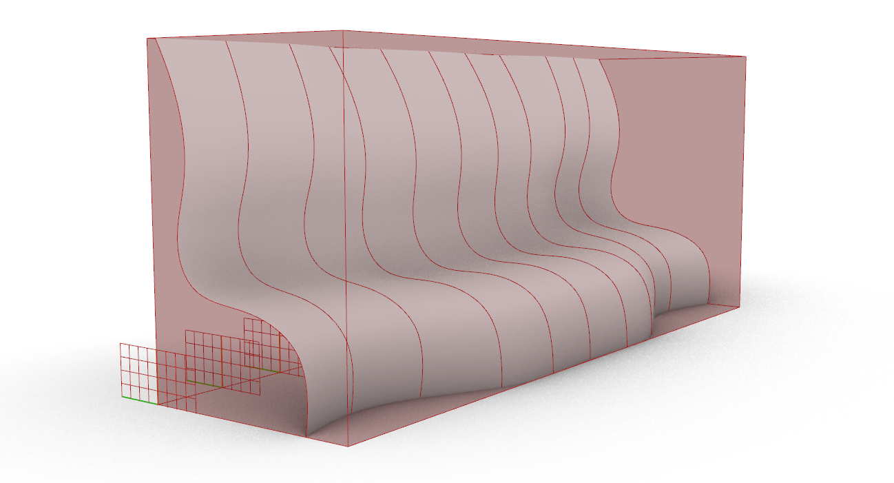
Then, we’ll use the ‘Brep | Plane’ component to create the intersection curves between these planes and the bench model. Now that we have the intersection curve, we can find the projection of the curves to the vertical plane needed to complete the surface. Using the “Edge Surface” component, we can create the slice surfaces between the bench intersection curves and the projecting curves.
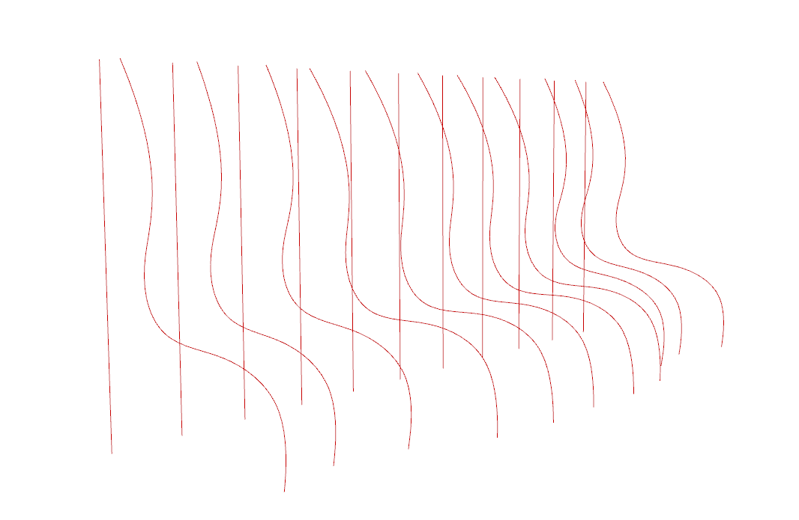
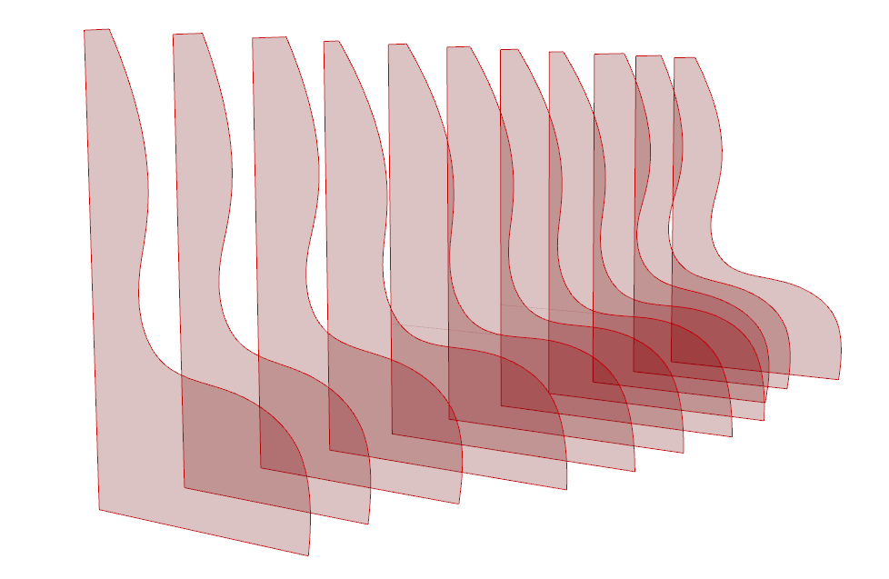
We can repeat the same process to create the horizontal slices.
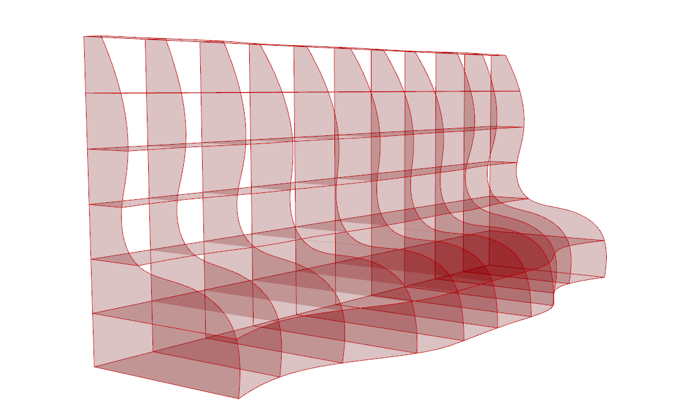
Next, we need to consider our manufacturing process of laser cutting. As we will be adding intersecting joint notches to connect the horizontal and vertical pieces, we will not be able to connect the slices at the boundaries of the bench. Therefore, we will remove the boundary slices for the horizontal and vertical slices using the “Cull Index” component by inputting the first and last index of the slices list.
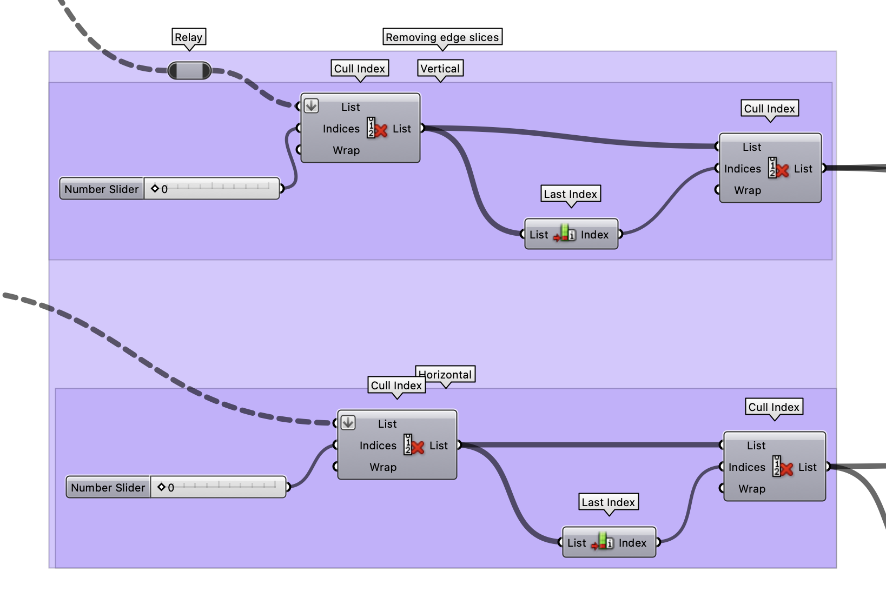

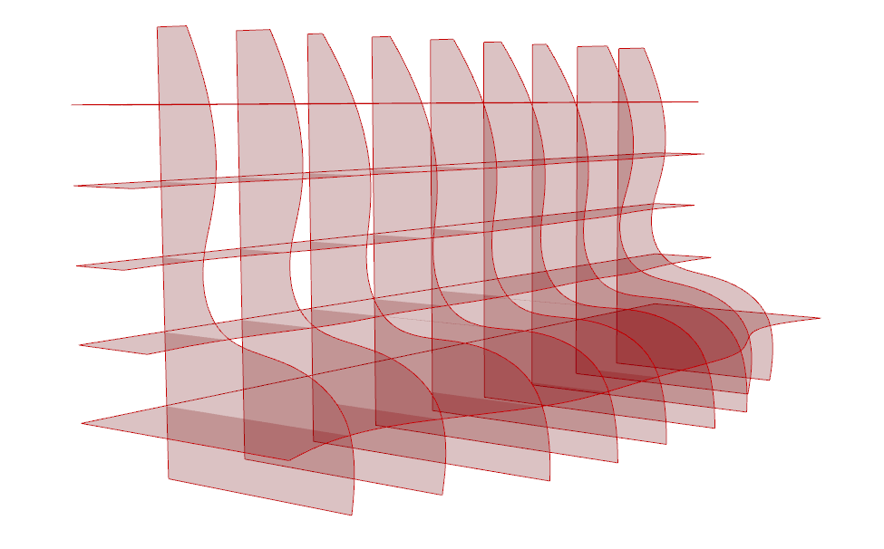
The final step is to add the thickness of the material to the slice surfaces we created. Based on the thickness of the material we will use for laser cutting, we can adjust the thickness of the extrusion in the components shown below. Inputting the correct thickness is critical to ensuring the intersecting joints are created correctly in the next section.

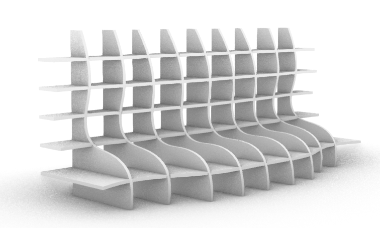
Find Intersections and Cut the Panels#
Now that we have both our horizontal and vertical slices, it’s time to determine where they intersect. This information will allow us to create notches at the intersections, facilitating the assembly of our laser-cut pieces into a 3D form.
In order to find the intersection between multiple slices, we need to use the “Cross Reference” and “Brep | Brep” component to ensure that each horizontal slice is intersected by all vertical slices and vice versa. We input our series of horizontal and vertical slice brep into the component, and it will output the curves where these slices intersect. The “Bounding Box” component then generates a box representing the intersections between the slices.
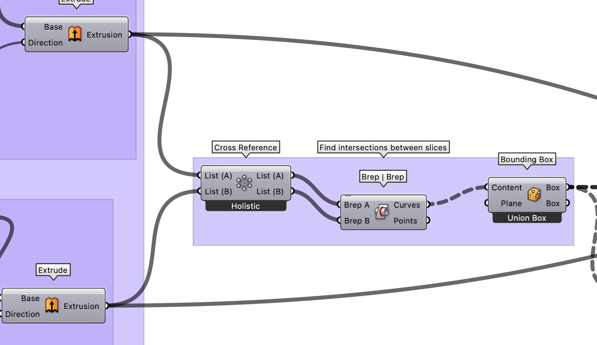
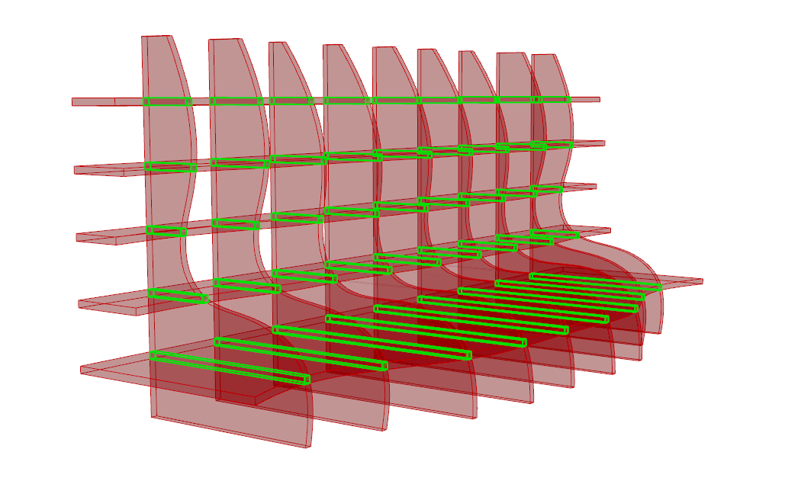
These intersection boxes will serve as the starting point for our notches. We can then move the intersection geometry by the depth of the cut. In this example, we will make the cut half the length of the intersection box. The “Solid | Difference” component is then used to cut the intersection joints into the slices which will subtract the notch geometry from the slices, leaving us with slices that have notches cut out at the intersections.

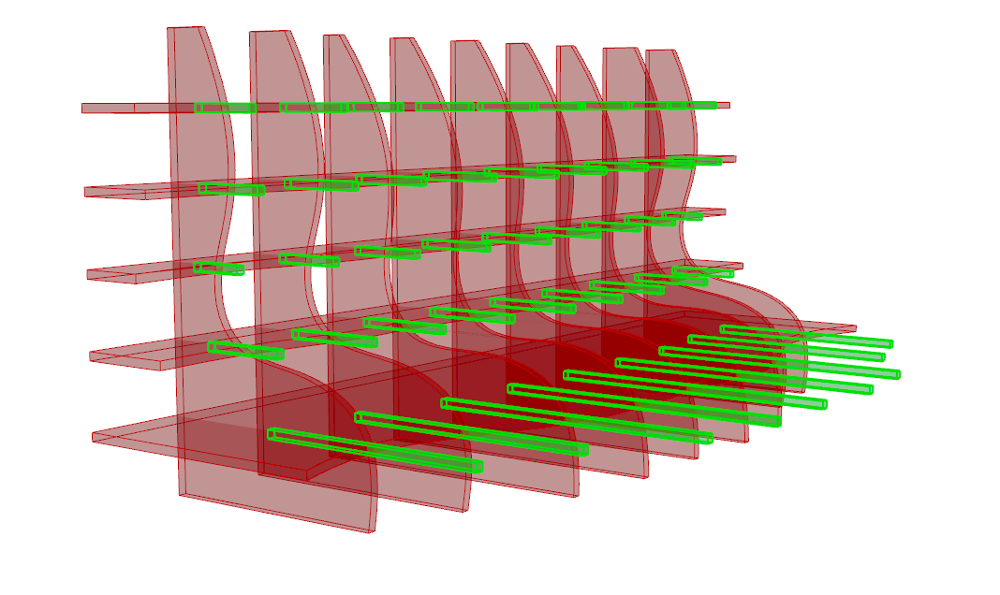
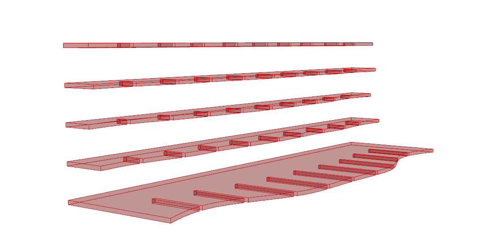

By the end of this section, your slices will be ready for laser cutting, with notches cut out at the intersections. In the next part, we will proceed to orient these slices onto our cutting plane. This will put us one step closer to our final goal of laser cutting and assembling our 3D bench model.
Orient the Panels Flat#
In this section, we’ll introduce the use of a powerful Grasshopper plugin, OpenNest, to orient our slices flat onto the cutting plane. OpenNest is a freely available open-source plugin designed to optimize part arrangement and nesting, making it a great tool for digital fabrication processes. You can download the plugin from this link: OpenNest Plugin.
After you’ve downloaded and installed the OpenNest plugin in Grasshopper, we’ll start setting up our primary inputs using the ‘Pack Objects’ component:
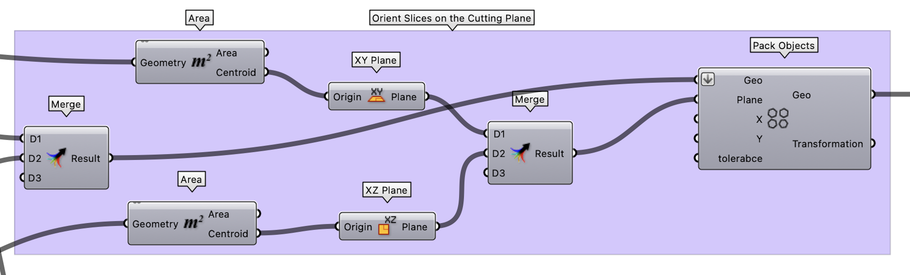
Geometries: This input takes the slices we’ve prepared as its data. Ensure these curves are flattened before connecting them to the ‘Geometries’ parameter of the ‘Pack Objects’ component.
Plane: This input takes the individual planes of each slice to inform the component how to orient each individual geometry.
Once you’ve set these inputs, OpenNest automatically processes the data, returning an configuration that arranges our slices in a line onto the cutting plane, viewable in the Rhino viewport.
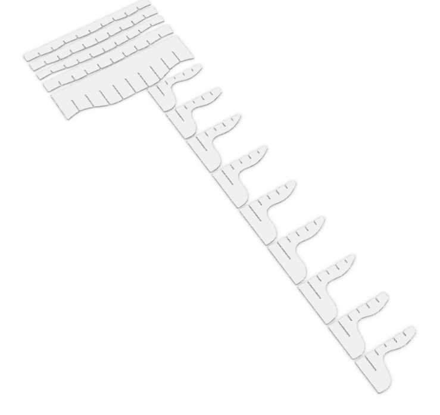
Optimally Pack the Panels into the Cutting Piece#
Now we will leverage the power of the OpenNest plugin to pack our slices optimally onto the cutting plane. This is an important step in the preparation process, aimed at maximizing material usage and minimizing waste.
Once you have your slices oriented flat on the cutting plane with the ‘Pack Objects’ component, it’s time to initiate the nesting process using the main ‘OpenNest’ component.
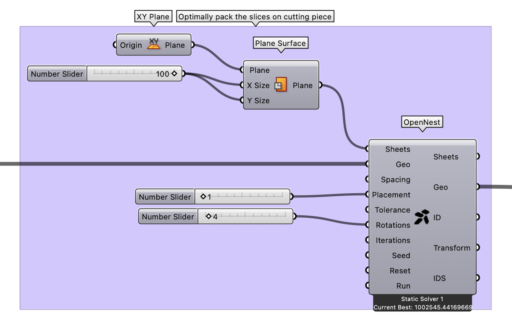
The ‘OpenNest’ component takes several inputs, but we will primarily focus on four of them:
Sheets: The surface of the cutting plane with the correct dimensions for the desired laser cutter.
Geometries: This will be the slices from our previous step.
Placement: This will change the configuration of the placement of the slices.
Rotations: The number of discreet rotations in between 360 degrees the algorithm will use to optimize the packing.
Upon setting these inputs, OpenNest will process the data and generate an optimized configuration that packs our slices onto the cutting plane as efficiently as possible. It’s important to note that each run may yield a slightly different result due to the algorithm’s nature. If you are not satisfied with the initial result, feel free to adjust the parameters or rerun the process until you achieve a desirable output.
By the end of this section, you’ll have a nested configuration of your slices on the cutting plane. The optimization provided by OpenNest should ensure that you are maximizing the use of your material and reducing waste. Next, in the final part of our tutorial, we will export these nested slices, preparing them for the laser cutting process.
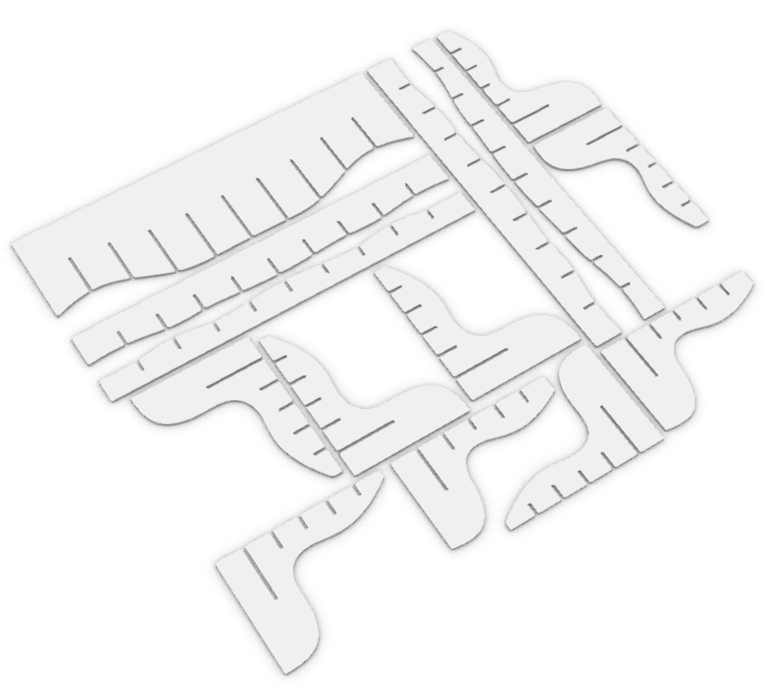
Generate the Cutting File#
Having optimally packed our slices onto the cutting plane using OpenNest, the next step is to bake these curves in Rhino and export them as a DXF file. DXF (Drawing Exchange Format) is a widely accepted format for CNC operations, including laser cutting.

To begin, we will find the projection curves of the Brep on the cutting plane for the slices. Next, we’ll ‘bake’ our curves from Grasshopper into Rhino. In Grasshopper, ‘baking’ refers to the process of transforming the generated geometry into actual geometry in the Rhino workspace. To do this, simply right-click on the ‘Geometries’ output from the ‘OpenNest’ component and select ‘Bake’. This will transfer the nested slices into Rhino.
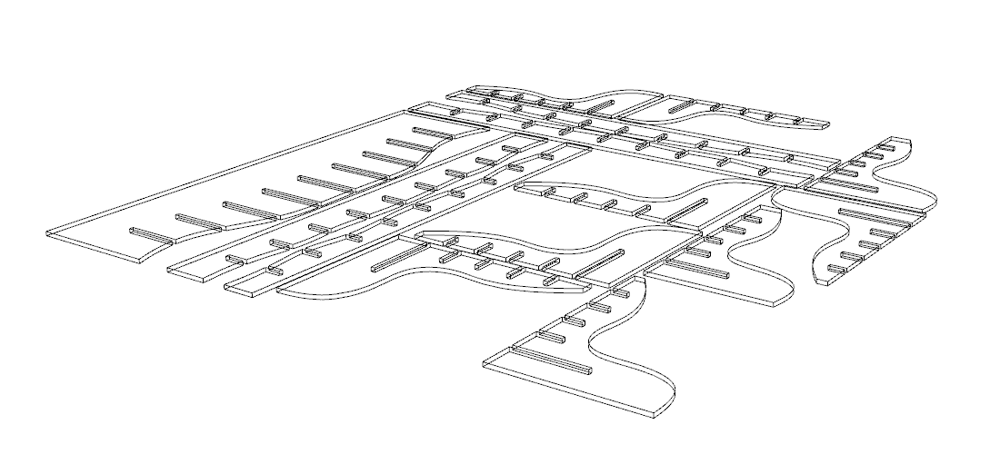
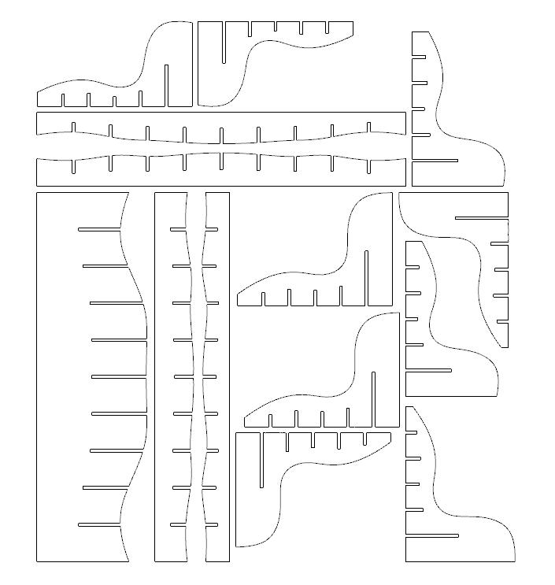
Once your geometries are baked into the Rhino environment, select the curves and proceed to exporting as a DXF. To do this, go to ‘File’ > ‘Export Selected’. In the dialog box that appears, choose ‘DXF’ from the ‘Save as type’ dropdown list.
Before finalizing the export, a ‘DXF Export Options’ window will appear. Here, you’ll need to select the appropriate settings for your laser cutter. The options vary, but you usually need to specify the DXF version (usually the latest, or as specified by your laser cutter’s requirements), the units (typically the same as your Rhino document’s units), and whether you want to export as curves, polylines, or other entities.
Congratulations! You’ve successfully navigated the process of preparing a geometry for laser cutting and are now ready to digitally manufacture your prototype.